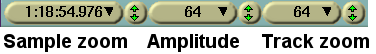

| [ << ] | [ >> ] | [Top] | [Contents] | [Índice] | [ ? ] |
Esta janela contém a Linha do Tempo e o ponto de entrada para todas as operações baseadas em menu. A Linha do Tempo consiste em um conjunto vertical de trilhas com representação horizontal de tempo. Define a saída das operações de render e o que é salvo quando você salva arquivos. À esquerda de Linha do Tempo está o patchbay, que contém opções que afetam cada trilha.
A linha do tempo
Abaixo da Janela de menu, você encontrará operações que afetam as janelas principais. A opção posições padrão reposiciona todas as janelas para uma configuração de edição em quatro janelas. Em configurações com dois monitores, a operação posições padrão preenche apenas um monitor com janelas.
A janela de programa contém várias funções para navegação e exibe a Linha do Tempo conforme está estruturada na memória: trilhas juntas verticalmente e se extendendo por sobre o tempo na forma horizontal. A barra de rolagem horizontal permite que você busque pelo tempo. A barra de rolagem vertical permite que você busque pelas trilhas.

Uma trilha de vídeo
Trilhas de vídeo representam a Linha do Tempo de seus vídeos, como se você efetivamente despusesse um filme fotográfico real horizontalmente em uma mesa. As imagens individuais que você vê na trilha são uma amostra do que está localizado naquele momento particular da Linha do Tempo.

Uma trilha de áudio
Trilhas de áudio representam a sua mídia de áudio como uma onda sonora; seguindo a analogia do filme, seria como se você "visse" a fita magnética horizontalmente na sua mesa.
Você pode ajustar o aumento ou diminuição vertical ou horizontal das trilhas e da exibição da "onda sonora" usando os controles da barra de aproximação de painel.
Cada trilha na linha do tempo possui um conjunto de atributos à esquerda, chamado de patch bay. Eles é usado para controlar o comportamento das trilhas. O atributo mais importante é o de armar trilha.
A navegação por trilhas envolve tanto chegar a uma trilha específica (áudio ou vídeo) quanto chegar a um certo momento no tempo da trilha. A janela de programa contém várias funções para navegação e exibe a Linha do Tempo conforme ela está estruturada na memória.
A barra de rolagem horizontal permite que você faça buscas pelo tempo. Para rolagem vertical, você também pode usar a rodinha do mouse.
A barra de rolagem horizontal permite que você busque pelo tempo. Para rolagem horizontal você também pode usar a rodinha do mouse com a tecla CTRL pressionada.
Além das ferramentas gráficas, você provavelmente vai usar mais o teclado para navegar. Use PAGE UP e PAGE DOWN para rolar para cima e para baixo nas trilhas.
Você freqüentemente terá de rolar para além do final da Linha do Tempo, mas as barras de rolagem não permitirão que você faça isso. Ao invés, use a SETA-PARA-A-DIREITA para rolar para além do final da linha do tempo.
Use as teclas HOME e END para chegar instantaneamente para o início ou final da linha do tempo. No modo barra, mantenha a tecla SHIFT pressionada enquanto pressiona o HOME ou END para selecionar a região da linha do tempo entre o ponto de inserção e a tecla pressionada.
Abaixo da linha do tempo, você encontrará o painel de aproximação. O painel de aproximação contém valores para aproximação de amostra (duração visível na linha do tempo), amplitude (escala da onda sonora), aproximação de trilha (altura das trilhas na linha do tempo), e aproximação de curva (abrangência da automação). Em adição às barras de rolagem, essas aproximações são as ferramentas principais para posicionar a linha do tempo.

Mudar o aproximação de amostra faz mudar a quantidade de tempo visível. Isso permite que você veja sua mídia desde a partir de uma configuração quadro a quadro quanto uma disposição completa de toda a linha do tempo. Quanto mais alta a configuração, mais quadros você poderá ver por tela. O valor de aproximação de amostra não é uma referência absoluta para a unidade de tempo, já que ele se refere à duração visível na linha do tempo e portanto também muda conforme você modifica a duração da janela do programa horizontalmente.
Use as setas PARA-CIMA e PARA-BAIXO para mudar a aproximação de amostra por uma razão de dois.
Caso seu mouse possua uma rodinha e ela funciona no X11, vá para as pré-vizualizações em miniatura e use a rodinha para aproximar ou afastar.
A amplitude afetará apenas o áudio. Ela determina quão grande será a onda sonora.
CTRL-PARACIMA e CTRL-PARABAIXO fazem a aproximação de amostra mudar.
A aproximação de trilha afeta todas as trilhas. Ela determina a altura de cada trilha. Se você mudar a aproximação da trilha, a aproximação de amplitude será compensada, de forma que as ondas sonoras pareçam proporcionais.
CTRL-PGUP e CTRL-PGDOWN fazem a aproximação de trilha mudar.
A Aproximação de curvas afeta as curvas em todas as trilhas do mesmo tipo. Ela determina a abrangência de valor para as curvas. Primeiro selecione o tipo de automação (fade de áudio, fade de vídeo, aproximação, X ou Y) e então use os valores à esquerda como mínimos e os da direita como máximos; ou informe manualmente os valores na caixa de texto. Normalmente, você usará -40.0 a 6.0 para fade de áudio e 0.0 a 100.0 para fade de vídeo. See section O patchbay.
Esses valores mudam a amplitude da curva, mas o único modo de deslocar as curvas é usar o botão Enquadrar autos à exibição.
 .
.
ALT-PARACIMA e ALT-PARABAIXO fazem a amplitude de curvas mudar.
Cada trilha possui um menu relacionado a ela. Para ativar o menu da trilha, clique com o botão direito do mouse na trilha (o menu relacionado afeta a trilha caso ela esteja armada no patch bay ou não). O menu de trilha contém um número de opções para lidar com várias trilhas simultaneamente:
O ponto de inserção é esse fio branco piscante que aparece se estendendo verticalmente na linha do tempo. Análogo ao cursor de seu editor de texto, o ponto de inserção marca o lugar na linha do tempo onde a próxima atividade do programa será iniciada. É o ponto onde ocorre uma operação de colar. Quando se renderiza um arquivo, ele define o início da região da linha do tempo a ser renderizada. Ele também é o ponto de início de todas as operações de reprodução.
O ponto de inserção na janela principal,
representado como um fio branco vertical no ponto 00:00.500
O ponto de inserção normalmente é movido ao se clicar no interior da barra de tempo principal. Qualquer região da linha do tempo não obscurecida por marcadores e pontos de entrada ou saída é uma região válida para se reposicionar o ponto de inserção. No modo de recortar e colar somente, o ponto de inserção também pode ser movido ao se clicar na linha do tempo.

A barra de tempo principal
Quando se move o ponto de inserção, a posição será ou alinhada aos quadros ou alinhada às amostragens ("samples"). Quando se edita um vídeo, é melhor alinhá-lo aos quadros. Quando se edita um áudio, é melhor alinhá-lo às amostragens. Selecione sua preferência em Configurações->Alinhar cursor aos quadros.
Modos de edição são dois métodos diferentes de operação que afetam o ponto de inserção e a edição na linha do tempo.
São eles:
O modo de funcionamento é determinado ao se selecionar a seta ou a barra ("i-beam") na barra de botões. Alternativamente, você pode usar a tecla e como um atalho de teclado para alternar entre os modos.

Os botões do modo de edição
Se a seta estiver selecionada, ela habilita o modo arrastar e soltar.
No modo arrastar e soltar, clicar na linha do tempo não reposiciona o ponto de inserção.
Um duplo-clique na linha do tempo seleciona todo o bloco de edição em cima do qual o mouse estiver posicionado.
Arrastar na linha do tempo reposiciona o bloco de edição para onde o apontador do mouse estiver passando. Isto é útil para reordenar as listas de reprodução de áudio, ordenar cenas de vídeos, mover efeitos por aí.
Para recortar e colar no modo de arrastar e soltar, você precisa marcar pontos de entrada/saída para definir uma região a ser afetada. See section Os pontos de entrada/saída.
See section Edição de arrastar e soltar.
Se a barra ("i-beam") estiver selecionada, ela habilita o modo recortar e colar.
No modo de recortar e colar, clicar na linha do tempo reposiciona o ponto de inserção.
Dar um duplo-clique na linha do tempo seleciona todo o bloco de edição por sobre o qual o cursor estiver sobre.
Arrastar na linha do tempo seleciona uma região. A região em destaque se torna a região afetada pelas operações de recortar e colar e a abrangência da reprodução durante a próxima operação de exibição. Clicar com a tecla SHIFT pressionada na linha do tempo estende a região em destaque.

Trilhas com área destacada, mostradas dentro do contorno verde
Quando se destaca uma região, os pontos de início e fim são ou alinhados aos quadros ou a amostras. Quando você estiver editando vídeo, você provavelmente vai querer que este alinhamento seja feito aos quadros. Quando editar áudio, você quererá alinhá-los a amostras. Isso pode ser configurado em configurações->Alinhar cursor aos quadros.
See section Edição de recortar e colar.
Observação: As revisões do Cinelerra CV 943 e 944 (checkouts do SVN de 19 a 21 de outubro de 2006) não possuíam botões de modos de edição. Os modos de ediçaõ "Copiar e colar" e "Arrastar e soltar" estavam unidos em um só, sendo a tecla shift a diferenciação entre eles. Este é o caso do ebuild do Gentoo media-video/cinelerra-cvs-20061020.
Em ambos os modos de edição, você pode marcar pontos de entrada e saída. Os pontos de entrada/saída definem a região afetada. No modo arrastar e soltar, eles são o único meio de definir uma região afetada. Nos dois modos, de recortar e colar e arrastar e soltar, a área em destaque sobrescreve os pontos de entrada/saída. Se uma área em destaque e pontos de entrada/saída estiverem marcados, a área selecionada é afetada pelas operações de edição e os pontos de entrada/saída são ignorados. Se nenhuma região estiver em destaque, os pontos de entrada/saída são usados. Para evitar confusões, é melhor usar ou o destaque ou os pontos de entrada/saída, mas não ambos simultaneamente.
Normalmente, os pontos de entrada/saída não afetam a região de reprodução. Apenas se você manter a tecla CTRL pressionada enquanto envia um comando de reprodução é que os pontos de entrada/saída determinam a região de reprodução.
Para marcar os pontos de entrada/saída, vá para a barra de tempo e posicione o ponto de inserção em algum lugar. Pressione o  botão de ponto de entrada. Mova o ponto de inserção para uma posição depois do ponto de entrada e pressione o
botão de ponto de entrada. Mova o ponto de inserção para uma posição depois do ponto de entrada e pressione o  botão do ponto de saída.
Ao invés de usar a barra de botões, você pode usar as teclas [ e ] para colocar/retirar pontos de entrada/saída.
botão do ponto de saída.
Ao invés de usar a barra de botões, você pode usar as teclas [ e ] para colocar/retirar pontos de entrada/saída.

Barra de tempo com pontos de entrada/saída marcados.
Se você marcar o ponto de inserção em algum outro lugar quando pontos de entrada/saída já existirem, quando você clicar os botões de entrada/saída, os pontos existentes serão reposicionados.
Se você clicar nos pontos de entrada/saída quando uma região estiver em destaque, o ponto de inserção será ignorado e pontos de entrada/saída serão marcados ao início e ao fim da área destacada.
Se você selecionar o ponto de entrada ou o ponto de saída, o ponto de inserção pulará para aquela localização. Depois de selecionar um ponto de entrada, se você pressionar o botão de ponto de entrada, o ponto de entrada será apagado. Depois de selecionar um ponto de saída, se você pressionar o botão de ponto de saída, o ponto de saída será apagado.
Dica: Para se livrar rapidamente dos pontos de entrada/saída, sem se preocupar onde eles estão ou se eles estão marcados ou não, simplesmente dê um duplo-clique nos botões [ e ]. O primeiro clique posicionará um novo ponto ou reposicionará um existente no ponto de inserção; o segundo clique o apagará. Obviamente, este truque não funcionará se o ponto de entrada ou de saída já estiverem marcados no ponto de inserção.
Clicar deixando o SHIFT pressionado em um ponto de entrada/saída destaca a região entre o ponto de inserção e aquele ponto de entrada/saída.
O ponto de inserção e os pontos de entrada/saída permitem que você defina uma região afetada mas eles não permitem que você salte para pontos exatos na linha do tempo tão facilmente. Para essa função, use os marcadores.
Marcadores são um jeito fácil de marcar localizações exatas na linha do tempo para onde você quer chegar. Quando você posiciona um ponto de inserção em algum lugar e pressiona o  botão de marcador, um novo marcador aparece na linha do tempo.
botão de marcador, um novo marcador aparece na linha do tempo.

Barra do tempo com um marcador nela
Independentemente de quais forem as configurações de aproximação, clicar no marcador o coloca em evidência e posiciona o ponto de inserção exatamente onde você havia colocado o marcador. Apertar o botão de marcador novamente quando um marcador estiver selecionado remove-o.
Marcadores podem reposicionar o ponto de inserção quando forem selecionados, mas também pode haver uma navegação entre eles com os botões de  marcador traversal. Quando um marcador estiver fora de visão, os botões de movimentação entre marcadores reposicionam a linha do tempo de modo que o marcador fique visível. Há atalhos de teclado para movimentação entre marcadores também.
marcador traversal. Quando um marcador estiver fora de visão, os botões de movimentação entre marcadores reposicionam a linha do tempo de modo que o marcador fique visível. Há atalhos de teclado para movimentação entre marcadores também.
CTRL-ESQUERDA reposiciona o ponto de inserção no marcador anterior.
CTRL-DIREITA reposiciona o ponto de inserção no próximo marcador.
Com a movimentação entre marcadores, você pode rapidamente buscar pontos anteriores e posteriores na linha do tempo.
A aba Marcadores na janela de recursos lista a marcação de tempo de cada marcador. Você pode editar a lista de marcadores e adicionar um título para cada item usando o menu que aparece. Para abrir o diálogo Informação de Marcador, clique com o botão direito do mouse no ícone do marcador na janela de Recursos, ou diretamente no símbolo do marcador na barra de tempo.
Com marcadores, você também pode selecionar regiões.
SHIFT-CTRL-ESQUERDA destaca a região entre o ponto de inserção e o marcador anterior.
SHIFT-CTRL-DIREITA destaca a região entre o ponto de inserção e o próximo marcador.
Um duplo-clique na barra de tempo entre dois marcadores evidencia a região entre os marcadores.
Clicar com o SHIFT em um marcador coloca em evidência a região entre aquele marcador e o ponto de inserção. Se uma região já estiver em destaque, isso estenderá a região em evidência para até aquele marcador.
Se você pressionar o botão de marcador quando uma região estiver em evidência, os marcadores serão criados ao final de cada região em destaque. Entretanto, se um final já tiver um marcador, então o marcador existente será apagado.
Pressionar o botão de marcador novamente quando um marcador estiver selecionado o apaga. Pressionar o botão de marcador manualmente ou a tecla l de novo e de novo para apagar uma série de marcadores pode ser bastante tedioso. Para apagar um conjunto de marcadores, primeiro selecione a região e depois use a função Editar...->Limpar marcadores. Se pontos de entrada/saída existirem, os marcadores entre os pontos de entrada/saída serão limpos e a região destacada ignorada.
Apenas no modo de edição Recortar e Colar, ao habilitar "Editar marcadores" no menu de configurações, ou ao desabilitar o botão  "Lock labels from moving" na barra de ferramentas do programa, os marcadores serão recortados, copiados ou colados ao londo da área selecionada da primeira trilha armada.
"Lock labels from moving" na barra de ferramentas do programa, os marcadores serão recortados, copiados ou colados ao londo da área selecionada da primeira trilha armada.
De forma similar, se uma área selecionada de um recurso for dividida do Visor para a linha do tempo em uma posição antes dos marcadores, estes marcadores serão empurrados para a direita na linha do tempo conforme a duração da área selecionada.
Para manter presos os marcadores em suas posições na barra de tempo, desabilite a opção "Editar marcadores" ou habilite o botão "Impedir marcadores de se mover".
No modo de edição Arrastar e soltar, os marcadores sempre ficarão presos à barra de tempo, mesmo com a opção "Editar marcadores" habilitada.
| [ << ] | [ >> ] | [Top] | [Contents] | [Índice] | [ ? ] |
This document was generated by Raffaella Traniello on Maio, 30 2008 using texi2html 1.76.